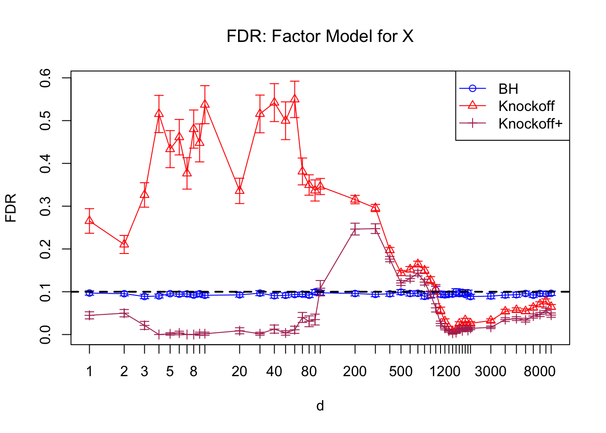
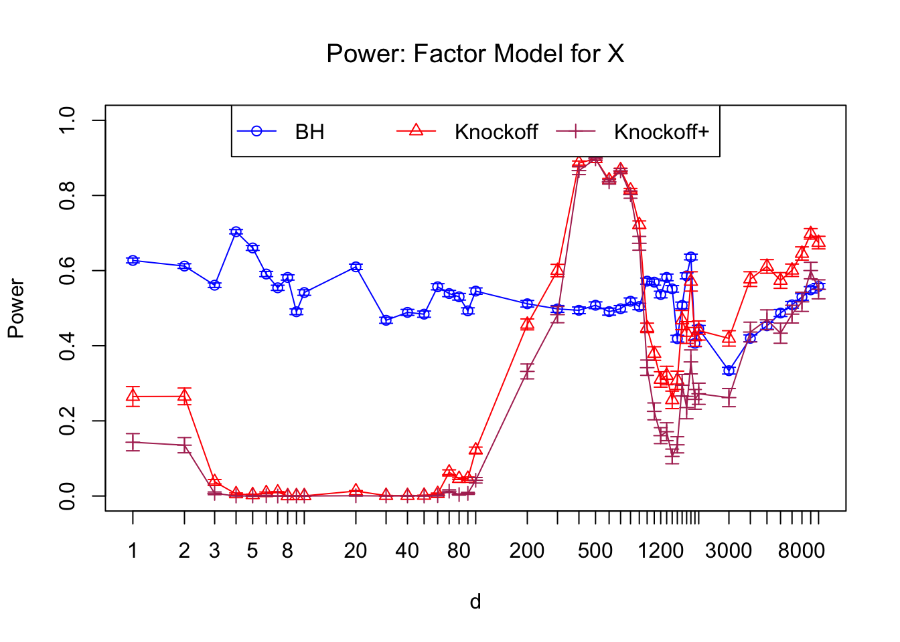

Knockoff on Correlated Design MatrixLast updated: 2018-05-12
workflowr checks: (Click a bullet for more information) ✔ R Markdown file: up-to-date
Great! Since the R Markdown file has been committed to the Git repository, you know the exact version of the code that produced these results.
✔ Environment: empty
Great job! The global environment was empty. Objects defined in the global environment can affect the analysis in your R Markdown file in unknown ways. For reproduciblity it’s best to always run the code in an empty environment.
✔ Seed:
set.seed(12345)
The command set.seed(12345) was run prior to running the code in the R Markdown file. Setting a seed ensures that any results that rely on randomness, e.g. subsampling or permutations, are reproducible.
✔ Session information: recorded
Great job! Recording the operating system, R version, and package versions is critical for reproducibility.
✔ Repository version: ddf9062
wflow_publish or wflow_git_commit). workflowr only checks the R Markdown file, but you know if there are other scripts or data files that it depends on. Below is the status of the Git repository when the results were generated:
Ignored files:
Ignored: .DS_Store
Ignored: .Rhistory
Ignored: .Rproj.user/
Ignored: analysis/.DS_Store
Ignored: analysis/BH_robustness_cache/
Ignored: analysis/FDR_Null_cache/
Ignored: analysis/FDR_null_betahat_cache/
Ignored: analysis/Rmosek_cache/
Ignored: analysis/StepDown_cache/
Ignored: analysis/alternative2_cache/
Ignored: analysis/alternative_cache/
Ignored: analysis/ash_gd_cache/
Ignored: analysis/average_cor_gtex_2_cache/
Ignored: analysis/average_cor_gtex_cache/
Ignored: analysis/brca_cache/
Ignored: analysis/cash_deconv_cache/
Ignored: analysis/cash_fdr_1_cache/
Ignored: analysis/cash_fdr_2_cache/
Ignored: analysis/cash_fdr_3_cache/
Ignored: analysis/cash_fdr_4_cache/
Ignored: analysis/cash_fdr_5_cache/
Ignored: analysis/cash_fdr_6_cache/
Ignored: analysis/cash_plots_cache/
Ignored: analysis/cash_sim_1_cache/
Ignored: analysis/cash_sim_2_cache/
Ignored: analysis/cash_sim_3_cache/
Ignored: analysis/cash_sim_4_cache/
Ignored: analysis/cash_sim_5_cache/
Ignored: analysis/cash_sim_6_cache/
Ignored: analysis/cash_sim_7_cache/
Ignored: analysis/correlated_z_2_cache/
Ignored: analysis/correlated_z_3_cache/
Ignored: analysis/correlated_z_cache/
Ignored: analysis/create_null_cache/
Ignored: analysis/cutoff_null_cache/
Ignored: analysis/design_matrix_2_cache/
Ignored: analysis/design_matrix_cache/
Ignored: analysis/diagnostic_ash_cache/
Ignored: analysis/diagnostic_correlated_z_2_cache/
Ignored: analysis/diagnostic_correlated_z_3_cache/
Ignored: analysis/diagnostic_correlated_z_cache/
Ignored: analysis/diagnostic_plot_2_cache/
Ignored: analysis/diagnostic_plot_cache/
Ignored: analysis/efron_leukemia_cache/
Ignored: analysis/fitting_normal_cache/
Ignored: analysis/gaussian_derivatives_2_cache/
Ignored: analysis/gaussian_derivatives_3_cache/
Ignored: analysis/gaussian_derivatives_4_cache/
Ignored: analysis/gaussian_derivatives_5_cache/
Ignored: analysis/gaussian_derivatives_cache/
Ignored: analysis/gd-ash_cache/
Ignored: analysis/gd_delta_cache/
Ignored: analysis/gd_lik_2_cache/
Ignored: analysis/gd_lik_cache/
Ignored: analysis/gd_w_cache/
Ignored: analysis/knockoff_10_cache/
Ignored: analysis/knockoff_2_cache/
Ignored: analysis/knockoff_3_cache/
Ignored: analysis/knockoff_4_cache/
Ignored: analysis/knockoff_5_cache/
Ignored: analysis/knockoff_6_cache/
Ignored: analysis/knockoff_7_cache/
Ignored: analysis/knockoff_8_cache/
Ignored: analysis/knockoff_9_cache/
Ignored: analysis/knockoff_cache/
Ignored: analysis/knockoff_var_cache/
Ignored: analysis/marginal_z_alternative_cache/
Ignored: analysis/marginal_z_cache/
Ignored: analysis/mosek_reg_2_cache/
Ignored: analysis/mosek_reg_4_cache/
Ignored: analysis/mosek_reg_5_cache/
Ignored: analysis/mosek_reg_6_cache/
Ignored: analysis/mosek_reg_cache/
Ignored: analysis/pihat0_null_cache/
Ignored: analysis/plot_diagnostic_cache/
Ignored: analysis/poster_obayes17_cache/
Ignored: analysis/real_data_simulation_2_cache/
Ignored: analysis/real_data_simulation_3_cache/
Ignored: analysis/real_data_simulation_4_cache/
Ignored: analysis/real_data_simulation_5_cache/
Ignored: analysis/real_data_simulation_cache/
Ignored: analysis/rmosek_primal_dual_2_cache/
Ignored: analysis/rmosek_primal_dual_cache/
Ignored: analysis/seqgendiff_cache/
Ignored: analysis/simulated_correlated_null_2_cache/
Ignored: analysis/simulated_correlated_null_3_cache/
Ignored: analysis/simulated_correlated_null_cache/
Ignored: analysis/simulation_real_se_2_cache/
Ignored: analysis/simulation_real_se_cache/
Ignored: analysis/smemo_2_cache/
Ignored: data/LSI/
Ignored: docs/.DS_Store
Ignored: docs/figure/.DS_Store
Ignored: output/fig/
Unstaged changes:
Deleted: analysis/cash_plots_fdp.Rmd
| File | Version | Author | Date | Message |
|---|---|---|---|---|
| rmd | cc0ab83 | Lei Sun | 2018-05-11 | update |
| html | cfa8e9d | LSun | 2018-02-28 | Build site. |
| rmd | 7f0ac6b | LSun | 2018-02-21 | knockoff |
| rmd | a9df8c2 | Lei Sun | 2018-02-17 | cor |
| rmd | 606582c | Lei Sun | 2018-02-17 | centering |
| html | d6a6285 | LSun | 2018-02-17 | Build site. |
| rmd | 9c67659 | LSun | 2018-02-17 | wflow_publish(“analysis/knockoff_5.rmd”) |
| rmd | 528aaae | Lei Sun | 2018-02-17 | design matrix |
| rmd | 13f72e4 | Lei Sun | 2018-02-17 | error bars |
| html | 27dd85c | LSun | 2018-02-17 | Build site. |
| rmd | ded2118 | LSun | 2018-02-17 | wflow_publish(“analysis/knockoff_5.rmd”) |
| rmd | b59ca80 | Lei Sun | 2018-02-08 | large scale |
| html | ab63fb3 | LSun | 2018-02-08 | Build site. |
| rmd | 1a2b7bf | LSun | 2018-02-08 | wflow_publish(c(“analysis/knockoff_5.rmd”, |
| rmd | 45f7156 | Lei Sun | 2018-02-07 | design matrix |
| html | fe9b5df | LSun | 2018-02-07 | Build site. |
| rmd | 7f18ee7 | LSun | 2018-02-07 | wflow_publish(c(“analysis/knockoff_5.rmd”, “analysis/knockoff_6.rmd”)) |
| rmd | bf64a83 | Lei Sun | 2018-02-06 | fixed x |
| html | 82a681c | LSun | 2018-02-06 | Build site. |
| rmd | cacdc03 | LSun | 2018-02-06 | wflow_publish(“analysis/knockoff_5.rmd”) |
| html | a31a150 | LSun | 2018-02-06 | Build site. |
| rmd | 1af62e7 | LSun | 2018-02-06 | wflow_publish(c(“knockoff_5.rmd”, “index.Rmd”)) |
| html | 0d44045 | LSun | 2018-02-06 | Build site. |
| rmd | ee112bc | LSun | 2018-02-06 | wflow_publish(c(“analysis/knockoff_5.rmd”, “analysis/knockoff_6.rmd”, |
| html | 642b762 | LSun | 2018-02-05 | Build site. |
| rmd | df9a5fd | LSun | 2018-02-05 | wflow_publish(“analysis/knockoff_5.rmd”) |
| rmd | b590d0b | LSun | 2018-02-02 | comparison |
| html | b590d0b | LSun | 2018-02-02 | comparison |
| rmd | f5466d5 | Lei Sun | 2018-02-02 | knockoff |
| rmd | c58606a | LSun | 2018-02-01 | linear regression |
| html | c58606a | LSun | 2018-02-01 | linear regression |
| rmd | b65988c | LSun | 2018-02-01 | wflow_publish(“knockoff_5.rmd”) |
In the Knockoff paper simulations, the columns of \(X\) are either independent or simulated from a Toeplitz correlation where \(Cor(X_i, X_j) = \rho^{|i - j|}\). Here we are replicating the independent results, and investigating how well Knockoff deal with other correlation structures.
In the following simulations, we always have \(n = 3000\), \(p = 1000\). Out of \(p = 1000\) \(\beta_j\)’s, \(950\) of them are zeroes, and the rest \(k = 50\) signals all have \(\beta_j = A\). For a certain \(X\), \(Y_n \sim N(X_{n\times p}\beta_p, I_n)\). Here are three scenarios to generate the columns of \(X_{n \times p}\). All simulations use \(q = 0.1\) cutoff.
n <- 3000
p <- 1000
k <- 50
q <- 0.1set.seed(777)
## Independent columns
X <- matrix(rnorm(n * p), n , p)
## Normalization
X <- t(t(X) / sqrt(colSums(X^2)))
## Generate knockoffs
Xk <- knockoff::create.fixed(X)
Xk <- Xk$Xk
## Average sebetahat
sqrt(mean(diag(solve(crossprod(X)))))[1] 1.224379## Signal strength
A <- 3.5
## Set beta
beta <- rep(0, p)
nonzero <- sample(p, k)
beta[nonzero] <- Aset.seed(777)
## Generate correlation matrix of X
d <- 5
B <- matrix(rnorm(p * d, 0, 1), p, d)
Sigma.X <- tcrossprod(B) + diag(p)
Rho.X <- cov2cor(Sigma.X)
## Simulate X
X <- matrix(rnorm(n * p), n, p) %*% chol(Rho.X)
## Normalization
X <- t(t(X) / sqrt(colSums(X^2)))
## Generate knockoffs
Xk <- knockoff::create.fixed(X)
Xk <- Xk$Xk
## Average sebetahat
sqrt(mean(diag(solve(crossprod(X)))))[1] 3.015966## Signal strength
A <- 9
## Set beta
beta <- rep(0, p)
nonzero <- sample(p, k)
beta[nonzero] <- Aset.seed(777)
## Generate correlation matrix of betahat
d <- 5
B <- matrix(rnorm(p * d, 0, 1), p, d)
Sigma.betahat <- tcrossprod(B) + diag(p)
Cor.betahat <- cov2cor(Sigma.betahat)
## Simulate X with independent columns
X <- matrix(rnorm(n * p), n, p)
## Normalize X
X <- t(t(X) / sqrt(colSums(X^2)))
## Transform independent columns to have Sigma_betahat^{-1} correlation structure
X <- X %*% chol(solve(Cor.betahat))
## Generate knockoffs
Xk <- knockoff::create.fixed(X)
Xk <- Xk$Xk
## Average sebetahat
sqrt(mean(diag(solve(crossprod(X)))))[1] 1.227621## Signal strength
A <- 3.5
## Set beta
beta <- rep(0, p)
nonzero <- sample(p, k)
beta[nonzero] <- A| F | DP.BH F | DP.Knockoff F | DP.Knockoff.Plus P | ower.BH P | ower.Knockoff P | ower.Knockoff.Plus |
|---|---|---|---|---|---|---|
| Independent Columns | 0.0936 | 0.0677 | 0.0431 | 0.4277 | 0.5400 | 0.4076 |
| Factor Model for X | 0.0956 | 0.4223 | 0.0000 | 0.6241 | 0.0066 | 0.0000 |
| Factor Model for betahat | 0.0755 | 0.3853 | 0.1986 | 0.4024 | 0.1322 | 0.0694 |
| Version | Author | Date |
|---|---|---|
| ab63fb3 | LSun | 2018-02-08 |
| Version | Author | Date |
|---|---|---|
| ab63fb3 | LSun | 2018-02-08 |

| Version | Author | Date |
|---|---|---|
| cfa8e9d | LSun | 2018-02-28 |
| d6a6285 | LSun | 2018-02-17 |
| 27dd85c | LSun | 2018-02-17 |
| ab63fb3 | LSun | 2018-02-08 |

sessionInfo()R version 3.4.3 (2017-11-30)
Platform: x86_64-apple-darwin15.6.0 (64-bit)
Running under: macOS High Sierra 10.13.4
Matrix products: default
BLAS: /Library/Frameworks/R.framework/Versions/3.4/Resources/lib/libRblas.0.dylib
LAPACK: /Library/Frameworks/R.framework/Versions/3.4/Resources/lib/libRlapack.dylib
locale:
[1] en_US.UTF-8/en_US.UTF-8/en_US.UTF-8/C/en_US.UTF-8/en_US.UTF-8
attached base packages:
[1] stats graphics grDevices utils datasets methods base
other attached packages:
[1] ggplot2_2.2.1 knitr_1.20 knockoff_0.3.0
loaded via a namespace (and not attached):
[1] Rcpp_0.12.16 whisker_0.3-2 magrittr_1.5
[4] workflowr_1.0.1 munsell_0.4.3 colorspace_1.3-2
[7] rlang_0.1.6 plyr_1.8.4 stringr_1.3.0
[10] highr_0.6 tools_3.4.3 grid_3.4.3
[13] gtable_0.2.0 R.oo_1.21.0 git2r_0.21.0
[16] htmltools_0.3.6 lazyeval_0.2.1 yaml_2.1.18
[19] rprojroot_1.3-2 digest_0.6.15 tibble_1.4.1
[22] R.utils_2.6.0 evaluate_0.10.1 rmarkdown_1.9
[25] labeling_0.3 stringi_1.1.6 pillar_1.0.1
[28] compiler_3.4.3 scales_0.5.0 backports_1.1.2
[31] R.methodsS3_1.7.1
This reproducible R Markdown analysis was created with workflowr 1.0.1